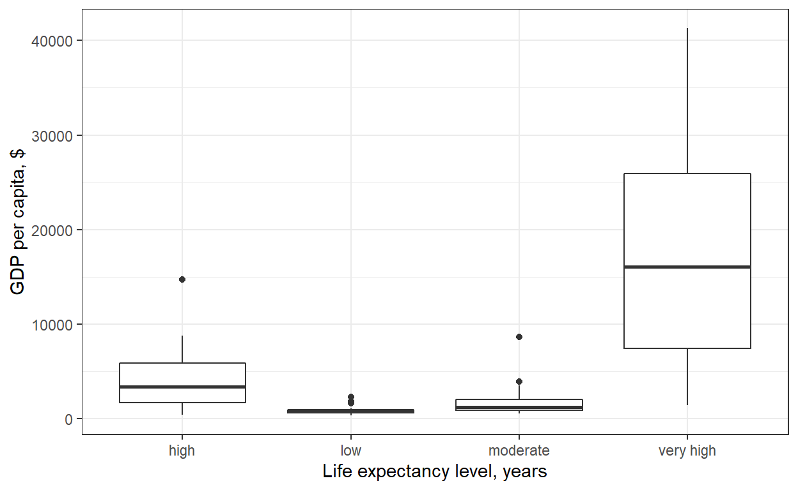
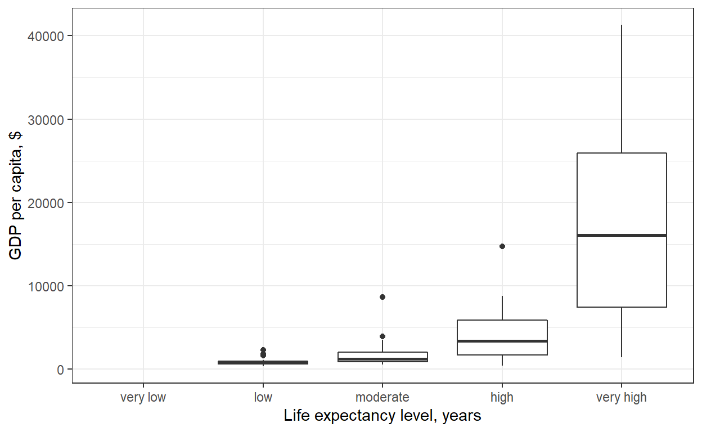
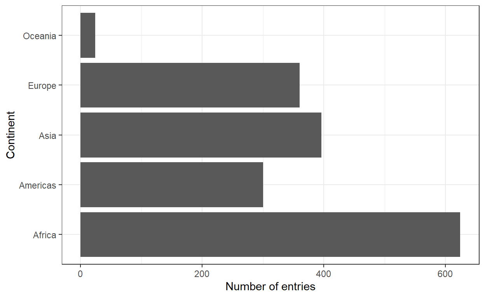
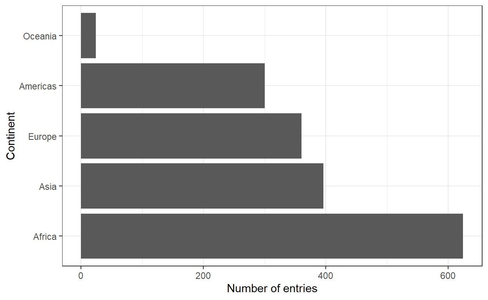
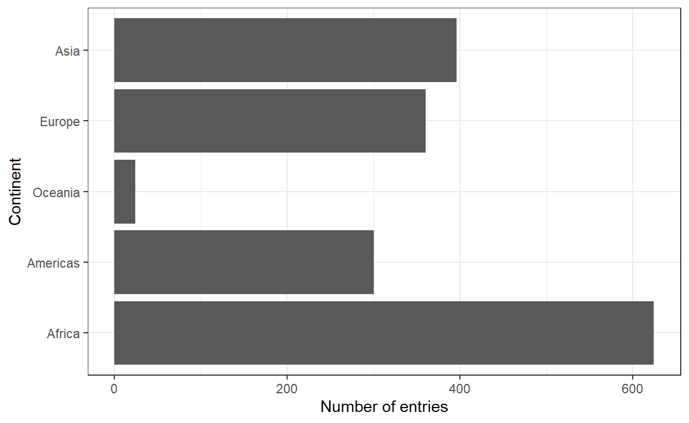
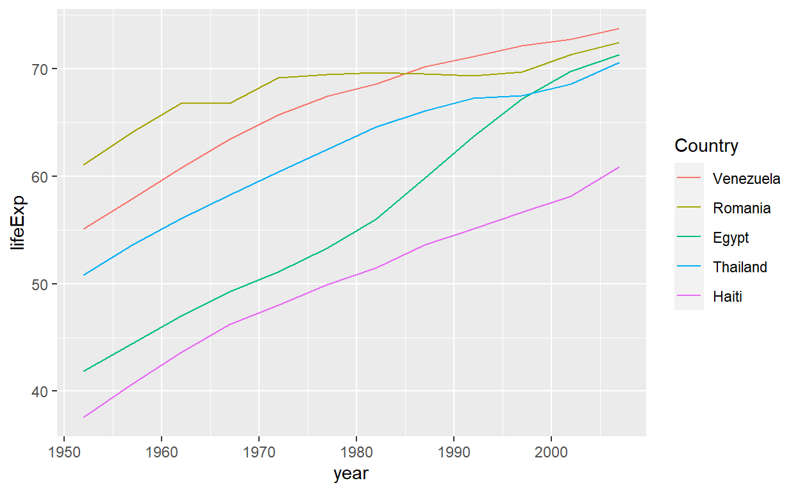
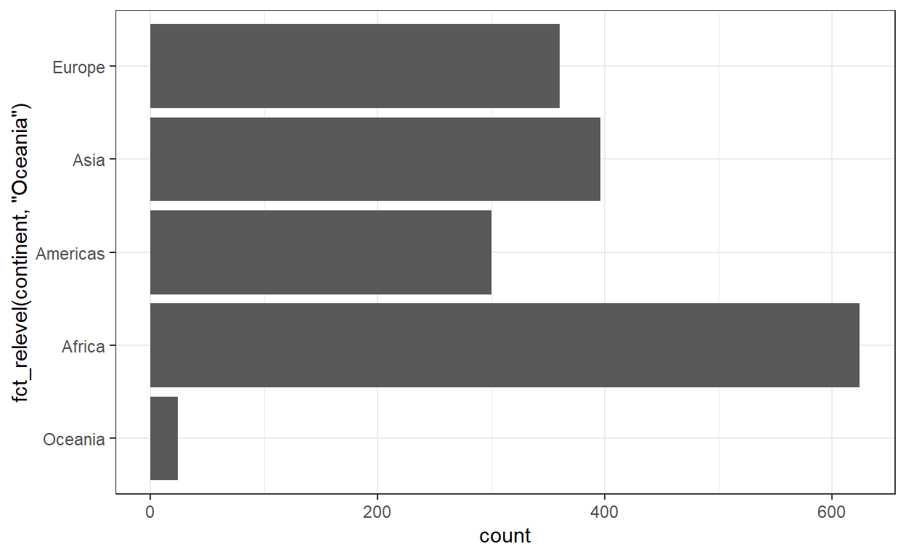
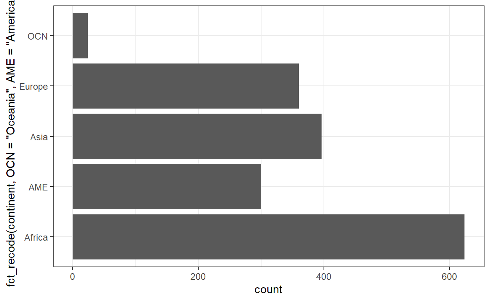

Fun with factors
Today’s class is working with a very important component of R – factors (i.e., categorical or ordinal variables).
Worksheet
The worksheet on the factors portion of today’s class is here. It’s mostly spaces for you to code along with the lecture notes.
Resources
References and tutorials
- Jenny Bryan’s notes on factors
Package documentation
- forcats package
Load the required libraries.
library(gapminder)
library(tidyverse)## ── Attaching packages ─────────────────────────────────────── tidyverse 1.3.1 ──## ✔ ggplot2 3.3.6 ✔ purrr 0.3.4
## ✔ tibble 3.1.7 ✔ dplyr 1.0.9
## ✔ tidyr 1.2.0.9000 ✔ stringr 1.4.0
## ✔ readr 2.1.2 ✔ forcats 0.5.1## ── Conflicts ────────────────────────────────────────── tidyverse_conflicts() ──
## ✖ dplyr::filter() masks stats::filter()
## ✖ dplyr::lag() masks stats::lag()# includes, among others, `forcats`Motivating the need for factors in R
Using factors for plotting
1.1 Let’s look again into gapminder
dataset and create a new cloumn, life_level, that contains
five categories (“very high”, “high”,“moderate”, “low”, “very low”)
based on life expectancy in 1997. Assign categories accoring to the
table below:
| Criteria | life_level |
|---|---|
| less than 23 | very low |
| between 23 and 48 | low |
| between 48 and 59 | moderate |
| between 59 and 70 | high |
| more than 70 | very high |
Function case_when() is a tidier way to vectorise
multiple if_else() statements. You can read more about this
function here.

Do you notice anything odd/wrong about the graph?
We can make a few observations:
It seems that none of the countries had a “very low” life-expectancy in 1997.
However, since it was an option in our analysis it should be included in our plot. Right?
Notice also how levels on x-axis are placed in the “wrong” order.
1.2 You can correct these issues by explicitly
setting the levels parameter in the call to factor(). Use,
drop = FALSE to tell the plot not to drop unused
levels.

Inspecting factors
In Activity 1, we created our own factors, so now let’s explore what
categorical variables that we have in the gapminder
dataset.
Exploring gapminder$continent
2.1 Use functions such as str(),
levels(), nlevels() and class()
to answer the following questions:
- What class (type of object) is
continent(a factor or character)?
class(gapminder$continent)- How many levels? What are they?
levels(gapminder$continent)
nlevels(gapminder$continent)- What integer is used to represent factor “Asia”?
str(gapminder$continent)Exploring gapminder$country
2.2 Let’s explore what else we can do with factors. Answer the following questions:
- How many levels are there in
country?
nlevels(gapminder$country)- Filter
gapminderdataset by 5 countries of your choice. How many levels are in your filtered dataset?
h_countries <- c("Egypt", "Haiti", "Romania", "Thailand", "Venezuela")
h_gap <- gapminder %>%
filter(country %in% h_countries)
nlevels(h_gap$country)Dropping unused levels
What if we want to get rid of some levels that are “unused” – how do we do that?
The function droplevels() operates on all the factors in
a data frame or on a single factor. The function
forcats::fct_drop() operates on a factor and does not drop
NA values.
## [1] 5Changing the order of levels
Let’s say we wanted to re-order the levels of a factor using a new metric - say, count().
We should first produce a frequency table as a tibble using
dplyr::count():
The table is nice, but it would be better to visualize the data. Factors are most useful/helpful when plotting data. So let’s first plot this:

Think about how levels are normally ordered. It turns out that by default, R always sorts levels in alphabetical order. However, it is often preferable to order the levels according to some principle:
- Frequency/count (
fct_infreq()) - Order of appearance (
fct_inorder()) - Sequence of the underlying integers (
fct_inseq())
- Make the most common level the first and so on. Function like
fct_infreq()might be useful. - The function
fct_rev()will sort them in the opposite order.

Section 9.6 of Jenny Bryan’s notes has some helpful examples.
- Another variable.
- For example, if we wanted to bring back our example of ordering
gapmindercountries by life expectancy, we can visualize the results usingfct_reorder().

Use fct_reorder2() when you have a line chart of a
quantitative x against another quantitative y and your
factor provides the color.

Change order of the levels manually
This might be useful if you are preparing a report for say, the state of affairs in Africa.

More details on reordering factor levels by hand can be found here.
Recoding factors
Sometimes you want to specify what the levels of a factor should be. For instance, if you had levels called “blk” and “brwn”, you would rather they be called “Black” and “Brown” – this is called recoding.
Lets recode Oceania and the Americas in the
graph above as abbreviations OCN and AME
respectively using the function fct_recode().

Grow a factor
Let’s create two data frames,df1 and df2
each with data from two countries, dropping unused factor levels.
The country factors in df1 and df2 have
different levels. Can you just combine them using c()?
## [1] Mexico Mexico United States United States France
## [6] France Germany Germany
## Levels: Mexico United States France GermanyUse fct_c() to perform c(), but also
combine the levels of the two factor variables:
## [1] Mexico Mexico United States United States France
## [6] France Germany Germany
## Levels: Mexico United States France GermanyExplore how different forms of row binding work behave here, in terms of the country variable in the result.